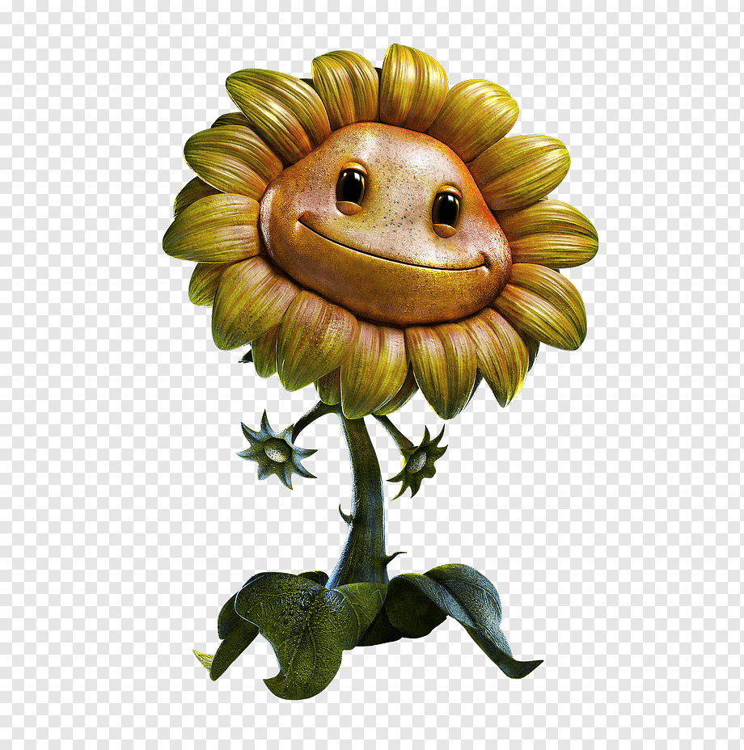
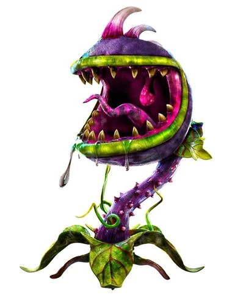

PLANTAS

Girasol
Las girasoles son las curanderas del equipo de las plantas y son las rivales del Científico. En el primer Garden Warfare es la única clase con plantas femeninas, y en Garden Warfare 2 junto con las Rosas son las dos clases con mujeres.
quieres ver mas.....Lanzaguisantes
El Lanzaguisantes sirve como un asalto de primera línea, o un atacante de ejecución y golpe, lo que lo hace bastante útil en muchas situaciones. Los Lanzaguisantes son fáciles de usar, por lo que se recomiendan para jugadores principiantes, junto con Girasol.
quieres ver mas.....

carnivora
Al igual que en el juego original, se puede comer zombis para vencerlos al instante
quieres ver mas.....CACTUS
Es el francotirador del equipo de las plantas, o sea, puede combatir a los enemigos a larga distancia
quieres ver mas.....